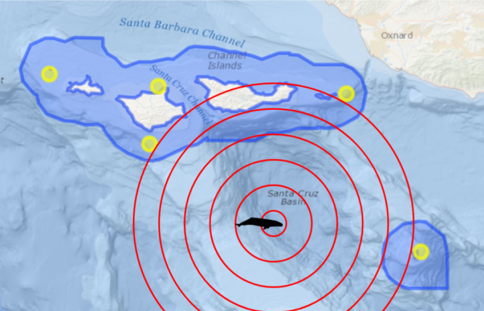
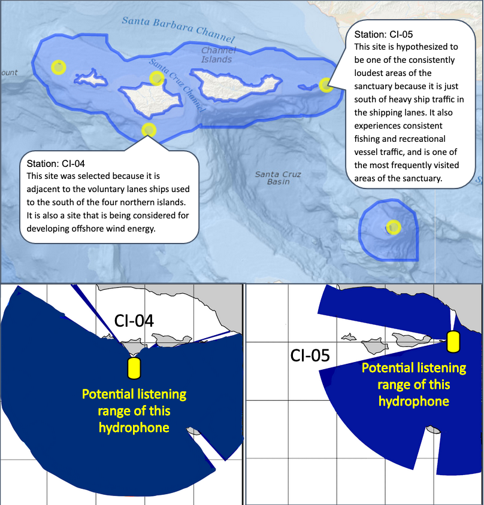

Ever been in a quiet library and noticed that you can hear someone clicking their pen from across the room? Or notice you can talk comfortably with a friend in an empty coffee shop but have to pull your stools closer when the room fills up?
Each of the 30 recording locations selected for this study were actually recording sounds over different areas based on the different environments in which they were placed. When you listen in a specific place, your ability to hear different sounds is dependent on the sound itself and the path the sound travels from the source to you – or in our case the hydrophone. Important qualities for the sound include how loud it is and the frequencies, or tones, it contains. Louder and lower pitch sounds can generally be heard farther away than quieter and higher pitch sounds. But the path that sound wave takes through the water, known as a sound’s “propagation”, are influenced by numerous factors like the depth of the source in the water column, the depth of the seafloor, whether the seafloor is hard or soft, bumpy or flat, and properties of the water itself (salinity, temperature, density).
 When we compare and explore sound recordings made at different recording locations, it’s important to know if the hydrophone at a location is recording sounds from a very small area near the hydrophone or a much larger surrounding area. To estimate the “listening area” over which a hydrophone can hear specific sounds, we used mathematical models of sound wave propagation combined with the known characteristics of the environment around each location (depth, seabed) and the known characteristics of several different sounds of interest (the intensity and main frequency content of boats, and calling fish and whales).

Under the “Where did we listen” tab for each sanctuary on the website, there is an example map showing the potential listening area for one of the sanctuary’s listening stations. For those interested in a deeper dive, use the ‘Statistics’ pull down in the Navigation Bar to access the SanctSound data portal’s sound propagation maps and models to support more detailed exploration of the listening range of a given station in a given year and given frequency band, and to compare the listening range of stations within a sanctuary and across multiple sanctuaries.